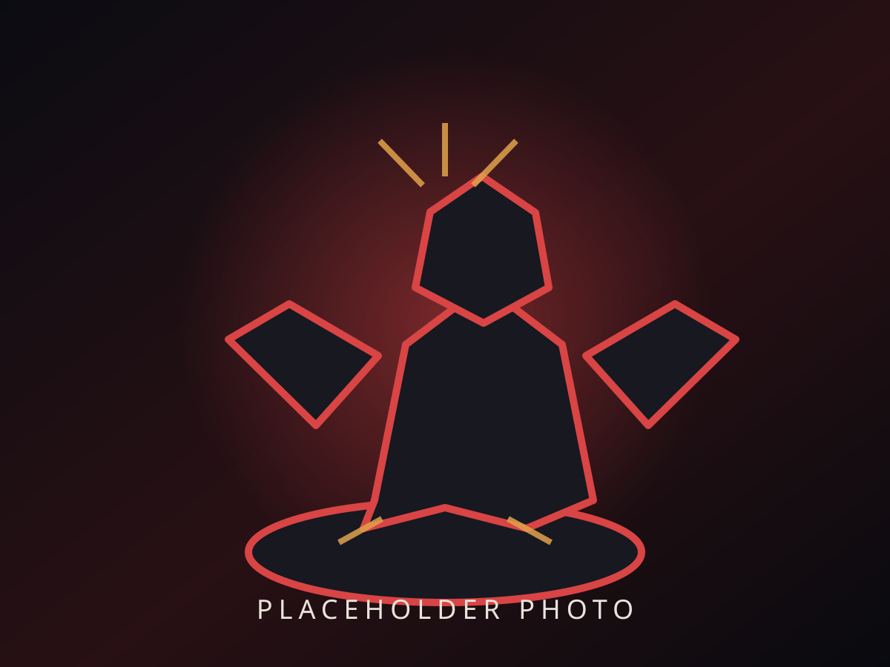
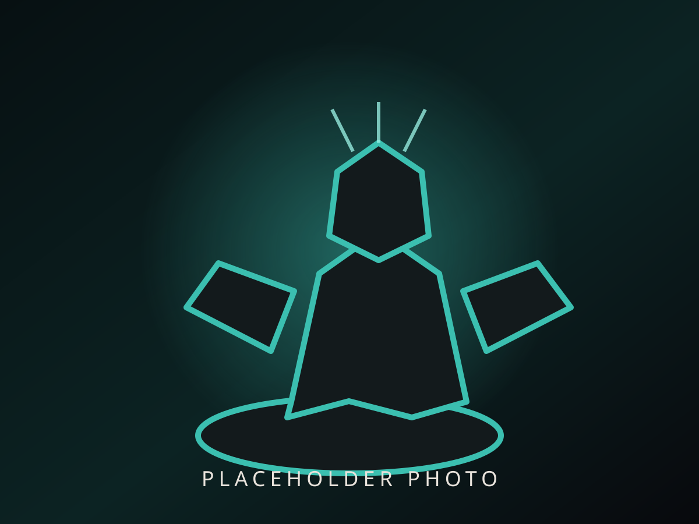

Preview 3 photosMiniature Name
Your painting note will appear here. You can write about the scheme, techniques, mistakes, favourite details, or anything else you want to remember.
Painted · DD MMM YYYY
A visual archive of the miniatures I paint. Each finished entry can hold multiple photos, the date I finished painting it, its game and faction, and notes about the paint job in my own words.

Preview 3 photosYour painting note will appear here. You can write about the scheme, techniques, mistakes, favourite details, or anything else you want to remember.
This is where your own note goes. Longer notes can wrap naturally without making the image area smaller.

Preview 2 photosThe same card design works for StarCraft, including several angles and a note written by you.
These are temporary layout examples only. Your real painted miniatures will replace them later.
One hero photo plus additional angles/detail photos, miniature name, game, faction, date painted, your personal painting note, and optional details such as model type, unit, paint scheme, basing, or status.